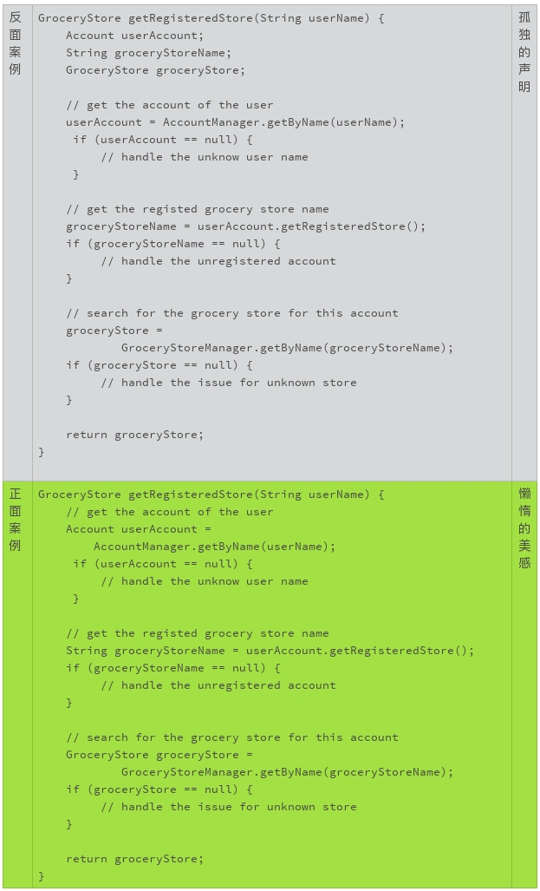
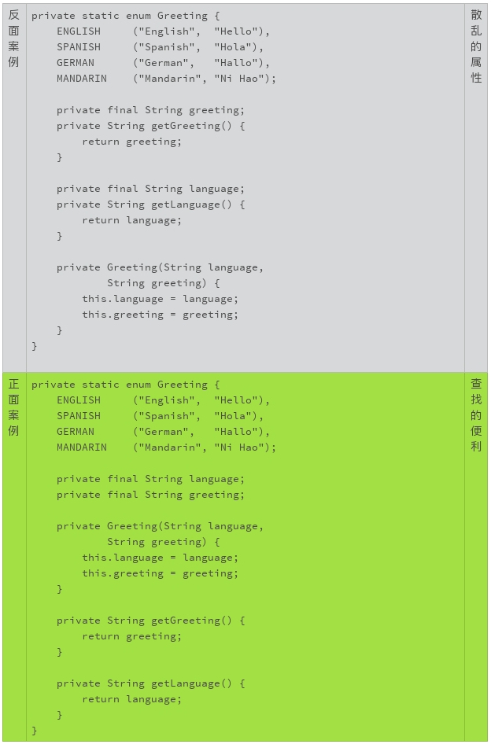
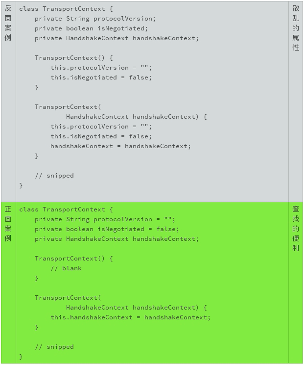
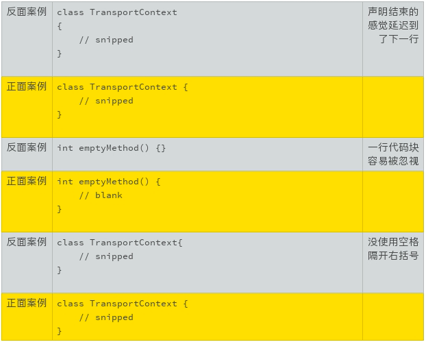
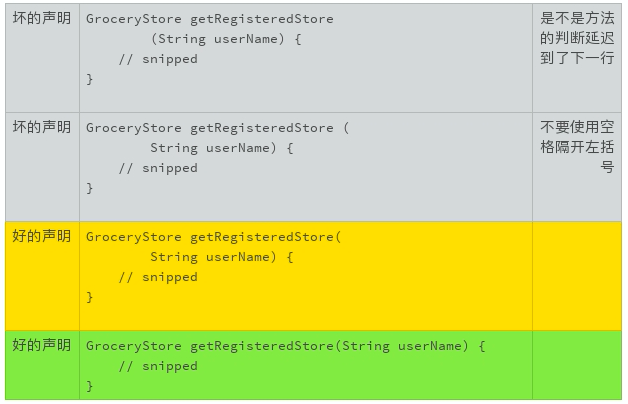
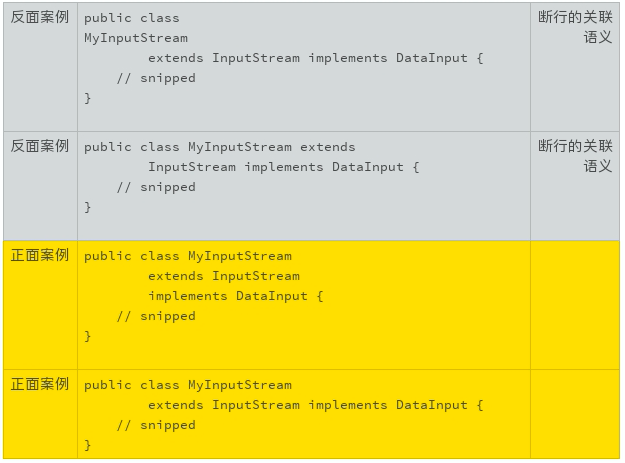

- 00 开篇词 你写的每一行代码，都是你的名片.md
- 01 从条件运算符说起，反思什么是好代码.md
- 02 把错误关在笼子里的五道关卡.md
- 03 优秀程序员的六个关键特质.md
- 04 代码规范的价值：复盘苹果公司的GoToFail漏洞.md
- 05 经验总结：如何给你的代码起好名字？.md
- 06 代码整理的关键逻辑和最佳案例.md
- 07 写好注释，真的是小菜一碟吗？.md
- 08 写好声明的“八项纪律”.md
- 09 怎么用好Java注解？.md
- 10 异常处理都有哪些陷阱？.md
- 11 组织好代码段，让人对它“一见钟情”.md
- 12丨组织好代码文件，要有“用户思维”.md
- 13 接口规范，是协作的合约.md
- 14 怎么写好用户指南？.md
- 15 编写规范代码的检查清单.md
- 16丨代码“规范”篇用户答疑.md
- 17 为什么需要经济的代码？.md
- 18丨思考框架：什么样的代码才是高效的代码？.md
- 19 怎么避免过度设计？.md
- 20 简单和直观，是永恒的解决方案.md
- 21 怎么设计一个简单又直观的接口？.md
- 22丨高效率，从超越线程同步开始！.md
- 23 怎么减少内存使用，减轻内存管理负担？.md
- 24 黑白灰，理解延迟分配的两面性.md
- 25 使用有序的代码，调动异步的事件.md
- 26 有哪些招惹麻烦的性能陷阱？.md
- 27 怎么编写可持续发展的代码？.md
- 28 怎么尽量“不写”代码？.md
- 29 编写经济代码的检查清单.md
- 30丨“代码经济篇”答疑汇总.md
- 31 为什么安全的代码这么重要？.md
- 32 如何评估代码的安全缺陷？.md
- 33 整数的运算有哪些安全威胁？.md
- 34 数组和集合，可变量的安全陷阱.md
- 35 怎么处理敏感信息？.md
- 36 继承有什么安全缺陷？.md
- 37 边界，信任的分水岭.md
- 38 对象序列化的危害有多大？.md
- 39 怎么控制好代码的权力？.md
- 40 规范，代码长治久安的基础.md
- 41 预案，代码的主动风险管理.md
- 42 纵深，代码安全的深度防御.md
- 43 编写安全代码的最佳实践清单.md
- 44 “代码安全篇”答疑汇总.md
- Q&A加餐丨关于代码质量，你关心的那些事儿.md
- 结束语 如何成为一个编程好手？.md
08 写好声明的“八项纪律”
我们在前面讨论了该怎么取一个好名字。在编程语言里，我们使用标识符来表示不同的逻辑和对象。声明就是用来定义这些标识符的。标识符声明的地方，就是取名字和第一次使用名字的地方。这一次，我们聊一聊该怎么声明一个标识符。
“声明”是我们和标识符初次见面的地方，第一印象就显得特别重要。如果我们忘记了，回头能够清晰地找到它，也很重要。如果我们印象模糊了，回头能够重新认识它，对于我们阅读程序也有很大的帮助。
一个标识符，不仅仅只是一个名字。 像人分男女、高矮胖瘦一样，标识符也可以有附加信息，用来增强人们对它的认识。
一个声明，一般至少包含两个部分，一个是标识符的名字，一个是标识符的类型。 比如：
int size;
有的声明，还有修饰和限定部分，比如Java的访问控制修饰符（private，public等）：
private int size;
或者C语言的存储类别限定符（auto，extern等）：
auto int size;
写声明很简单，但写好声明也并非易事。我们以Java语言为例来讨论声明的编码风格。在Java语言里，声明可以用来定义类、方法、类变量、局部变量和常量。不同声明的语法有着巨大的差别，但是也有很多共通的地方，你可以把这些思路用在自己熟悉的语言上。
接下来，我会带你一起来学写好声明的“八项纪律”。
取一个好名字
既然是标识符，就涉及到取名字的问题。我们前面已经讨论过“怎么取好名字”这个话题了，你可以复习一下。
一行一个声明
我们在前面讨论过“一行一个行为”的代码整理规则。这一规则，同样适用于标识符的声明。不推荐在同一行里声明多个变量，即使这一行很短。
- 这样可以很方便地变更和维护代码。 比如，下面的两个代码变更，第二种格式更容易发现大意的错误。
- int size;
+ int size, length;
int size;
+ int length;
下面这个代码变更例子，也是同理。
- int size, length;
+ int size; // size of the list
+ int length;
- int size;
+ int size; // size of the list
int length;
另外，不要在同一行声明不同类型的标识符。
- 需要注意的是，表示数组的中括号“[]”是类型的一部分，而不是标识符的一部分。无论是Java语言，还是在C语言的代码中，我都建议把数组符号放在类型该在的地方。
局部变量需要时再声明
标识符的声明应该和它的使用尽可能地靠近，特别是局部变量的标识符声明。这样在视觉上，标识符的定义和使用，可以方便我们阅读和记忆。
比如，在下面的例子中，GroceryStore的声明就太早了。如果代码再长一些，等我们读到代码的末尾时，前面声明的变量很可能都忘记了，如果还要返回来查看这个具体的声明，那就太麻烦了。

类属性要集中声明
同样是为了阅读和记忆，类变量的声明则要集中。因为类变量无论是私密变量，还是公开变量，在类的方法实现中，随时都可以调用。我们需要把这些变量放在一起，以便于修改和查找。
在下面的例子中，变量的声明散乱在类的代码块里。如果我们想要新加一个方法，或者调整方法声明的顺序，代码马上就会变得混乱不堪。

声明时就初始化
除非变量的初始值依赖于更多的条件，或者涉及到一定的计算，否则，声明时就应该完成初始化。声明时初始化，可以防止初始化的遗漏或者不必要的代码重复。
在下面的例子中，你可以设想一下，如果变量_isNegotiated_是后来加入的属性，哪一种编码方式更容易变更、更容易维护？

尾随的花括号
一般来说，类声明和方法声明后，要使用花括号把实现的代码包括进来。花括号的使用语法很随意。我不建议代码中混杂地使用不同的格式。我只推荐一种方法：
左括号不要单独成行，要紧随在语句尾部，以一个空格隔开；
右括号单独一行。

靠紧的小括号
小括号的使用语法也可以很随意。小括号一般用来识别一个标识符是不是方法标识符，所以建议小括号要紧靠着标识符，中间不要有空格。

搜索优化的换行
搜索优化是我们编写代码时要考虑的一个因素。搜索优化既包括针对搜索引擎的优化（SEO），也包括针对编辑器（vi, Netbeans）以及系统工具（grep）的搜索优化。
常见的搜索模式有：
“public class”
“abstract class”
“class TheClassName”
“extends TheClassName”
“implements TheInterfaceName”
“theMethodName(”
这些常用的搜索模式给了我们一个很好的启示：语义相关的词语，常见的搜索模式，要尽量放在同一行。

小结
我们讲完了写好声明的八项原则，虽然相对来说比较细致，但基本的大原则主要有两个：
取好名字
容易识别
掌握住这两条大原则，你会慢慢积累更多的最佳实践案例和纪律细节，让自己的代码声明越来越好读、越来越好用。
一起来动手
所以为了让你更好地实践，我找了一段Java代码。你来试试看，怎么把这段代码改得更漂亮？欢迎你把优化的代码公布在讨论区，我们一起来看看这段代码都有哪些可以改进的地方。
import java.util.ArrayList;
import java.util.HashMap;
import java.util.List;
import java.util.Map;
class Solution {
/**
* Return a list of the words in words that match the given pattern.
*
* A word matches the pattern if there exists a permutation of
* letters p so that after replacing every letter x in the pattern
* with p(x), we get the desired word.
*
* Example:
* Input: words = ["abc","deq","mee","aqq","dkd","ccc"],
* pattern = "abb"
* Output: ["mee","aqq"]
*
* Explanation: "mee" matches the pattern because there is
* a permutation {a -> m, b -> e, ...}.
*
* "ccc" does not match the pattern because
* {a -> c, b -> c, ...} is not a permutation, since a
* and b map to the same letter.
*/
public List<String> findAndReplacePattern(String[] words, String pattern) {
List<String> ans = new ArrayList();
for (String word: words)
if (match(word, pattern))
ans.add(word);
return ans;
}
public boolean match(String word, String pattern) {
Map<Character, Character> M = new HashMap();
for (int i = 0; i < word.length(); ++i) {
char w = word.charAt(i);
char p = pattern.charAt(i);
if (!M.containsKey(w)) M.put(w, p);
if (M.get(w) != p) return false;
}
boolean[] seen = new boolean[26];
for (char p: M.values()) {
if (seen[p - 'a']) return false;
seen[p - 'a'] = true;
}
return true;
}
}
备注：代码选自https://leetcode.com/problems/find-and-replace-pattern/
欢迎你把这篇文章分享给你的朋友或者同事，一起来探讨吧！
© 2019 - 2023 Liangliang Lee. Powered by gin and hexo-theme-book.